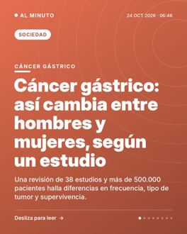
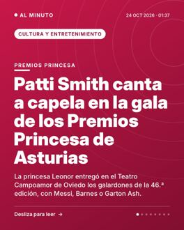
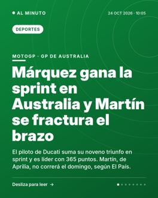

El alcalde de Puertollano renuncia a ir en la lista del PP al Congreso
Miguel Ángel Ruiz declarará como investigado por presunto acoso laboral el 25 de noviembre, cuatro días antes de las generales.
Ver en Instagram →Sábado 24 de octubre de 2026 · 46 noticias · actualizado a las 23:39
Miguel Ángel Ruiz declarará como investigado por presunto acoso laboral el 25 de noviembre, cuatro días antes de las generales.
Ver en Instagram →El líder del PSOE reivindica "la España de Lorca" y acusa a PP y Vox de buscar "una involución".
Ver en Instagram →España actúa la última de las 16 candidaturas en la gala de Malta, que se emite en La 1 desde las 21:00 horas.
Ver en Instagram →Una concentración convocada en redes en plaza de Catalunya acabó con cargas de los Mossos, barricadas y comercios cerrados.
Ver en Instagram →ERC y Podemos hacen su primer acto conjunto en Nou Barris, con la vivienda como eje, a 36 días de las elecciones del 29N.
Ver en Instagram →La Policía Nacional ha constatado que hay compatriotas trabajando como teleoperadores en oficinas clandestinas de fraude.
Ver en Instagram →Ocurrió durante la visita de la Familia Real al Pueblo Ejemplar 2026, la Cofradía de Pescadores de Santa Ana de Llanes.
Ver en Instagram →Exteriores busca entregar antes del miércoles los datos de 163.020 afectados por la suspensión cautelar del voto CERA.
Ver en Instagram →Se concentraron ante la Consejería de Educación y piden a Zarzalejo que negocie con los sindicatos. La huelga indefinida arrancó el 14 de octubre.
Ver en Instagram →El líder del PP acusa al Gobierno de adelantar las elecciones por sus problemas judiciales y anuncia rebajas de impuestos.
Ver en Instagram →A las 3:00 serán las 2:00 en la España peninsular y la noche del sábado al domingo durará 25 horas.
Ver en Instagram →La policía de Baviera ha detenido a un sospechoso y investiga si el fuego fue intencionado. No hay heridos.
Ver en Instagram →Lo hizo dos días después de su polémico viaje a Madrid y a seis semanas de las elecciones del 29 de noviembre en España.
El futbolista argentino recibió el premio en el Teatro Campoamor y la princesa Leonor lo citó en su discurso.
Ver en Instagram →Los afectados por los coeficientes reductores piden una ley que elimine las penalizaciones antes de las elecciones del 29-N.
Ver en Instagram →Otro menor de 3 años ha sido reanimado y trasladado al Hospital de La Ribera, según informa el CICU.
Ver en Instagram →Según El Mundo, parte de unos 300 manifestantes superó los filtros policiales y llegó cerca del acto. La furgoneta de Abascal fue golpeada.
Ver en Instagram →Tenía 58 años y falleció el viernes por la tarde a causa de una larga enfermedad, según fuentes de su grupo.
Ver en Instagram →El cantante alega una situación familiar “de extrema gravedad”. Las nuevas fechas se comunicarán en los próximos días.
Ver en Instagram →Los socialistas se quedan con el 70% de los puestos y el Frente Amplio ocupará sobre todo el segundo lugar, según elDiario.es y El Mundo.
Ver en Instagram →El tribunal archiva la causa tres meses después de que el TJUE avalara la ley de amnistía, según informan EL PAÍS y elDiario.es.
Ver en Instagram →Es el último de los cuatro candidatos en aceptar. Las entrevistas se emitirán el 13 de noviembre, según informa elDiario.es.
Ver en Instagram →La coalición calcula un coste de 20.000 millones al año y propone financiarlo con más impuestos a grandes empresas y fortunas.
Ver en Instagram →En los Premios Princesa de Asturias, el Rey recordó que votar es una "altísima responsabilidad" a poco más de un mes de las generales.
Ver en Instagram →Varios consejeros irán en las candidaturas del 29 de noviembre y deberán dejar sus cargos, según informa 20minutos.
Ver en Instagram →Según la Comisión Europea, el déficit de trasposición español es del 5,5%, más del doble de la media comunitaria.
Ver en Instagram →Los cuatro nuevos modelos de Volkswagen impulsan la producción, que según EL PAÍS se duplicará en 2026.
Ver en Instagram →El petróleo, por encima de 114 dólares, y la deuda de Francia pesan sobre la bolsa española, según varios medios.
Ver en Instagram →Una treintena de empresas de la Bolsa española pagarán dividendo. Inditex y Santander abren el calendario el 2 de noviembre.
Ver en Instagram →Bankinter, BBVA, Self Bank, Abanca y Caixa Popular lanzan bonificaciones de hasta 30.000 euros por llevarles tus fondos.
Ver en Instagram →El TSJA rechaza el recurso del condenado, de 78 años, por la violencia sobre su mujer durante más de 50 años de matrimonio.
Ver en Instagram →
Una revisión de 38 estudios y más de 500.000 pacientes halla diferencias en frecuencia, tipo de tumor y supervivencia.
Ver en Instagram →Según Xataka, un falso concurso de baile usa el "ghostpairing" para vincular un dispositivo ajeno a tu cuenta. Hay 177 dominios fraudulentos.
Ver en Instagram →Según El País, el detector Pangram marca 'Donde el agua trabaja' como texto generado por IA. Los expertos advierten de que no es una prueba.
Ver en Instagram →Los 'solopreneurs' alcanzan el 26,5% de las startups españolas, un máximo histórico, según varios medios.
Ver en Instagram →Aragón ya ha enviado a sus centros un protocolo de seis medidas para actuar ante estos perfiles anónimos de redes sociales.
Ver en Instagram →Hay marchas prohibidas en varias ciudades, cambio de ruta en París y primeros disturbios en Marsella una semana después del 17-O.
Ver en Instagram →La Guardia Revolucionaria dice que los buques, con más de 4,5 millones de barriles de crudo, quedaron inmovilizados y abandonados.
Ver en Instagram →La tregua, que según la Casa Blanca empezaría el 29 de octubre, permitiría evacuar a unos 6.000 civiles atrapados en la ciudad de Jersón.
Ver en Instagram →El festival de Valladolid respondió en su gala inaugural a las críticas por su supuesta falta de neutralidad ideológica.
Ver en Instagram →
La princesa Leonor entregó en el Teatro Campoamor de Oviedo los galardones de la 46.ª edición, con Messi, Barnes o Garton Ash.
Ver en Instagram →Será su quinto clásico. El partido se juega este domingo a las 21.00 h y el VAR será para Iglesias Villanueva.
Ver en Instagram →
El piloto de Ducati suma su noveno triunfo en sprint y es líder con 365 puntos. Martín, de Aprilia, no correrá el domingo, según El País.
Ver en Instagram →La AIU suspende a la campeona olímpica y mundial de maratón por un control anterior al Maratón de Sídney.
Ver en Instagram →Una treintena de teitos agrupados junto al río, en uno de los conjuntos mejor conservados de Asturias, según Directo al Paladar.
Ver en Instagram →La OCU apunta que se pueden ahorrar hasta 1.310 euros al año. Catalunya figura entre las comunidades más caras.
Ver en Instagram →